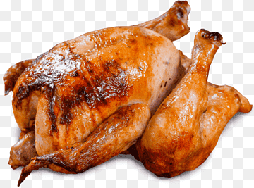
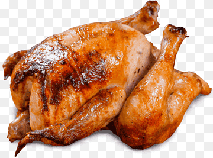

| alimento | imagen | calorias | tipo |
|---|---|---|---|
| atún | 130 | pescado | |
| manteca | 902 | lacteos | |
| pollo |  | 239 | carne |
| lenteja | 116 | legumbre | |
| lecchuga | 15 | verdura |
la etiqueta que se utiliza para crear una tabla en HTML es "table"
la etiqueta que se utiliza para definir una fila en una tabla es "tr"
la etiqueta utilizada para crear una celda de encabezado en una tabla es "th"
la etiqueta utilizada para crear una celda de datos en una tabla es "td"
el atributo que se utiliza para especificar cuantas columnas de celda abarca es "rowspan"
el atributos que se utilizan para especificar cuantas filas debe abarcar una celda es "colspan"
la etiqueta que tenemos que utilizar para definir las filas es colspan 10 veces
| alimento | imagen | calorias | tipo |
|---|---|---|---|
| atún | 130 | pescado | |
| manteca | 902 | lacteos | |
| pollo |  | 239 | carne |
| lenteja | 116 | legumbre | |
| lecchuga | 15 | verdura |